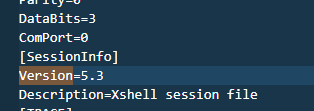
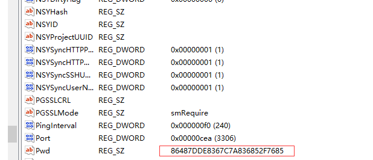
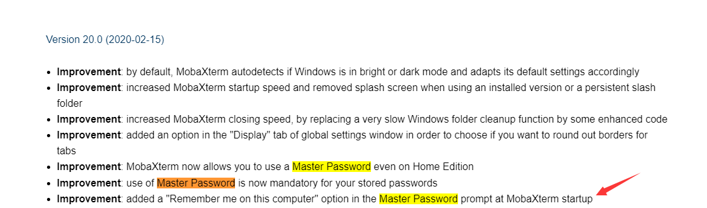

第三方软件密码抓取
目录
XManager
链接的session文件保存在以下的目录中
xshell7: C:\Users\%username%\Documents\NetSarang Computer\7\Xshell\Sessions
xshell6: C:\Users\%username%\Documents\NetSarang Computer\6\Xshell\Sessions
XShell5: %userprofile%\Documents\NetSarang\Xshell\Sessions
XFtp5: %userprofile%\Documents\NetSarang\Xftp\Sessions
XShell6: %userprofile%\Documents\NetSarang Computer\6\Xshell\Sessions
XFtp6: %userprofile%\Documents\NetSarang Computer\6\Xftp\Sessions
根据session文件中对应的version版本，分为不同的密码加密方法

根据version版本不同，可分为三种情况： version<5.1,version==5.1 or ==5.2,version>5.2
Navicat
|MySQL|HKEY_CURRENT_USER\Software\PremiumSoft\Navicat\Servers\`<your connection name>`|
|MariaDB|HKEY_CURRENT_USER\Software\PremiumSoft\NavicatMARIADB\Servers\`<your connection name>`|
|MongoDB|HKEY_CURRENT_USER\Software\PremiumSoft\NavicatMONGODB\Servers\`<your connection name>`|
|Microsoft SQL|HKEY_CURRENT_USER\Software\PremiumSoft\NavicatMSSQL\Servers\`<your connection name>`|
|Oracle|HKEY_CURRENT_USER\Software\PremiumSoft\NavicatOra\Servers\`<your connection name>`|
|PostgreSQL|HKEY_CURRENT_USER\Software\PremiumSoft\NavicatPG\Servers\`<your connection name>`|
|SQLite|HKEY_CURRENT_USER\Software\PremiumSoft\NavicatSQLite\Servers\`<your connection name>`|
密码就在pwd里面

加密算法根据版本的不同，有blowfish加密（最常见）和AES128/CBC/PKCS7Padding。
下面的链接讲述了Navicat的加密原理。
现成的工具
https://github.com/HyperSine/how-does-navicat-encrypt-password
SecureCRT
ini文件存放在
C:\Users\user1\AppData\Roaming\VanDyke\Config\Sessions\xxxx.ini
7.3.3版本前用的是blowfish-cbc 加密两次，后面版本就是AES256-CBC
https://github.com/HyperSine/how-does-SecureCRT-encrypt-password
WINSCP
host,username和加密的password存储在下面的注册表中
HKEY_CURRENT_USER\Software\Martin Prikryl\WinSCP 2\Sessions
password的解密需要用到host和username，可以用以下脚本进行解密. 在winSCP 20版本以后强制使用Master Password，日不了。
https://github.com/anoopengineer/winscppasswd
FileZilla
FileZilla如果设置了主密码，那就解不开了.
FileZilla有两个版本Client和Server，Client用于链接其他FTP服务器（包括FileZilla搭建的和本身自带的），Server是直接把自己整成一个FTP服务器给Client链接
配置文件一般会在C:\Users\conslu\AppData\Roaming\FileZilla\sitemanager.xml，并且密码是base64加密的，hostname和username都是明文。
VNC
vnc是一系列优秀的远程控制软件
- RealVNC：由VNC团队部份成员开发，分為全功能商业版及免费版。
- TightVNC：强调节省频宽使用。
- UltraVNC：加入了TightVNC的部份程式及加强效能的图型映射驱动程式，并结合Active Directory及NTLM的帐号密码认证，但仅有Windows版本。
- Vine Viewer：MacOSX的VNC用户端。
realVNC
MobaXterm
ssh远控，如果再保存密码时设置了Master Password那就无法破解了(Version 20.0后强制使用Master Password加密密码）

在没有Master Password的情况下揭秘密码需要如下数据
HKCU\SOFTWARE\Mobatek\MobaXterm 获取SessionP
HKCU\SOFTWARE\Mobatek\MobaXterm\P 从这个键值可以拿到ssh登录用户名，ip，登陆的服务，加密的密码
以及对应的用户名和当前机器名
脚本如下
https://github.com/HyperSine/how-does-MobaXterm-encrypt-password
https://github.com/xillwillx/MobaXterm-Decryptor